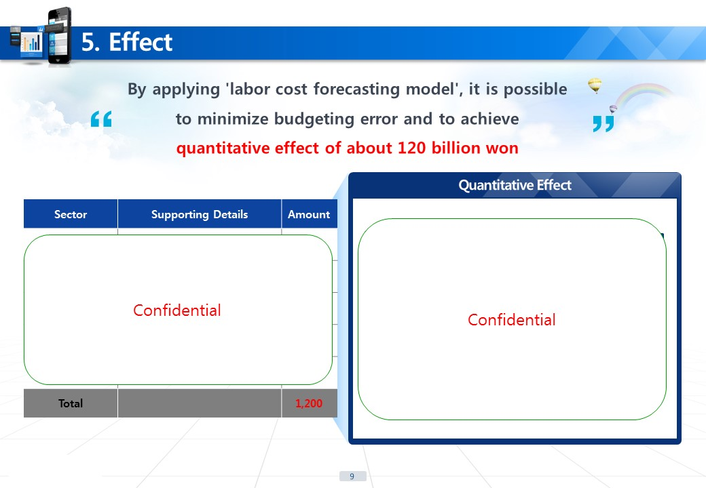

Working with Prof. Ed Boyden at MIT
Former Data Scientist at Korea MND
BA in Statistics from UC Berkeley
I want to understand how the brain works. Utilizing my computational/statistics background and fast-growing new experimental skillsets, I am determined to design scalable, open-source tools that address the end-to-end pipeline – from experiments to data analysis to sharing data with other researchers around the world for fruitful collaborations – and figure out how many discrete cell types exist and how they are connected in the brain, at the level of synaptic connections.
Contact me at tayshin@mit.edu
I am a machine. I am a machine. I am a machine. I am a machine. I am a machine. I am a machine. I am a machine. I am a machine. I am a machine. I am a machine. I am a machine. I am a machine. I am a machine. I am a machine. I am a machine. I am a machine. I am a machine. I am a machine. I am a machine. I am a machine. I am a machine. I am a machine. I am a machine. I am a machine. I am a machine. I am a machine. I am a machine. I am a machine. I am a machine. I am a machine. I am a machine. I am a machine. I am a machine. I am a machine. I am a machine. I am a machine.
I am a machine. I am a machine. I am a machine. I am a machine. I am a machine. I am a machine. I am a machine. I am a machine. I am a machine. I am a machine. I am a machine. I am a machine. I am a machine. I am a machine. I am a machine. I am a machine. I am a machine. I am a machine. I am a machine. I am a machine. I am a machine. I am a machine. I am a machine. I am a machine. I am a machine. I am a machine. I am a machine. I am a machine. I am a machine. I am a machine. I am a machine. I am a machine. I am a machine. I am a machine. I am a machine. I am a machine.